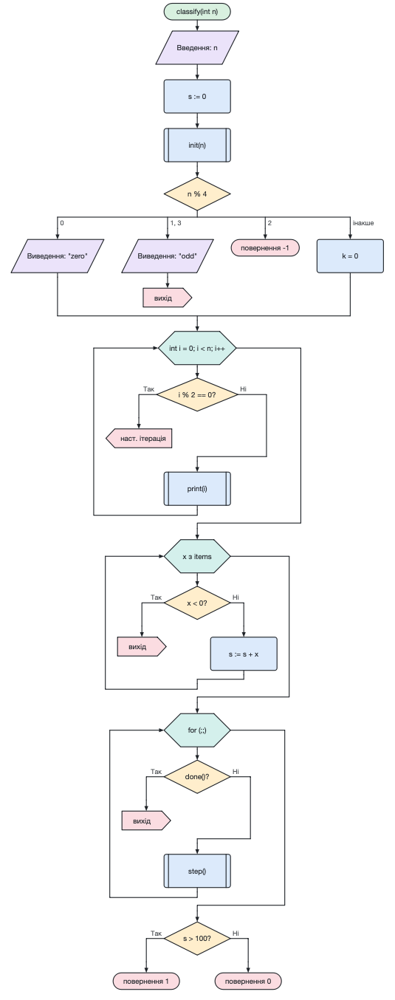

Множинний вибір (switch) — ромб із виразом, від якого розходяться гілки. Над кожною гілкою записано її значення (кілька значень через кому), остання гілка «інакше» виконується, якщо жодне значення не збіглося.
Цикл for у стилі C — шестикутник «ініціалізація; умова; крок», наприклад int i = 0; i < n; i++. Будь-яка частина може бути порожньою.
Цикл по елементах — тіло виконується для кожного елемента колекції: x з items.
Виклик підпрограми (визначений процес) — прямокутник із подвійними бічними лініями.
Повернення завершує алгоритм (можна вказати значення). Вихід (break) залишає найближчий цикл або вибір, наступна ітерація (continue) переходить до наступного повторення циклу. Після цих блоків лінія потоку обривається.
Подвійне клацання по блоку початку дозволяє задати ім’я, параметри й тип результату алгоритму — їх використовують генератори коду.
Блоки можна перетягувати мишею (з Ctrl/Alt — копіювати), Esc скасовує вставлення.
